- Engineers across the stackData, AI/ML/LLM, Software, Cloud, Mobile, UI/UX, Quality, DevOps & Delivery Leadership.
- Embedded coaches, delivery pairs & teamsWe build with your people and teach as we go.
- Simplest architectureThe right solution at the right time, so you can innovate.
Partners
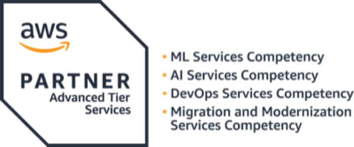
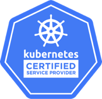
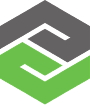
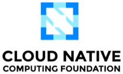
Certified
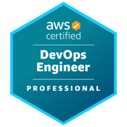
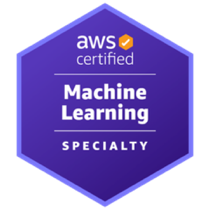
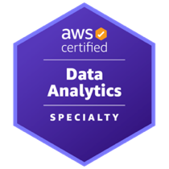
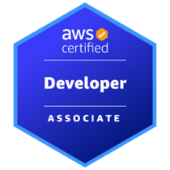
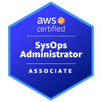
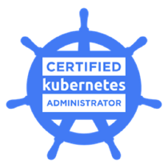
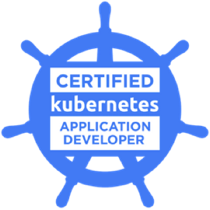